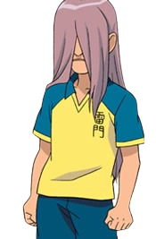

JIM WRAITH
{% for item in statistiche_9 %}
Squadra: {{ item[0] }}
Posizione: {{ item[1] }}
Elemento: {{ item[2] }}
Tiro: {{ item[3] }}
Fisico: {{ item[4] }}
Controllo: {{ item[5] }}
Difesa: {{ item[6] }}
Velocità: {{ item[7] }}
Stamina: {{ item[8] }}
Determinazione: {{ item[9] }}
Prima mossa: {{ item[10] }}
Seconda mossa: {{ item[11] }}
Terza mossa: {{ item[12] }}
Quarta mossa:{{ item[13] }}
{% endfor %}
BIOGRAFIA
Jim Wraith (影野 仁, Kageno Jin) è un difensore della Raimon e dei Dark Emperors.
Jim è un ragazzo alto e slanciato, di pelle molto chiara.
Ha lunghi capelli biondo-viola chiaro lisci che gli coprono gran parte del volto.
Ha un aria molto inquietante, simile a un fantasma. Indossa sempre la divisa della Raimon
È famoso perché non si fa mai notare, si muove sempre di soppiatto e spesso entra di nascosto nelle scene,
spaventando gli altri.
A causa però del suo aspetto e del suo tono di voce estremamente calmo,
a volte addirittura depresso, appare un po' triste e deprimente.
Inoltre, sembra intorno a lui ci sia quasi sempre un' aura oscura.
Jim è però,nonostante l'aspetto,un bravo ragazzo, gentile e tiene molto ai suoi compagni.
Nei Dark Emperors diventa più sicuro di se e beffardo,
salvo poi tornare normale una volta libero dall'influsso della Pietra di Alius.